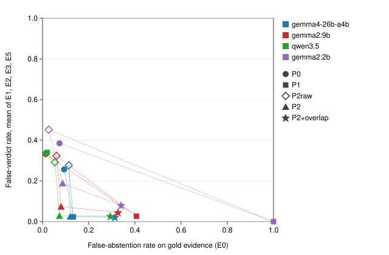

Automated fact-checking pipelines ask a language model whether retrieved evidence supports or refutes a claim. When retrieval fails, a verdict is worse than no answer: it attaches a verification label to a claim nobody verified. We measure how often four local open-weight models (2B to 26B parameters) give SUPPORT or REFUTE on 150 SciFact claims when the evidence cannot decide them, and what two cheap mitigations cost on good evidence. Empty retrievals and error strings are almost always handled correctly. The failures are inputs that look like evidence: when the claim itself is returned as its source, every model gives a verdict on 93–100% of items, nearly always SUPPORT; on an on-topic abstract about a different finding, false-verdict rates range from 10% to 54%. An explicit licence to abstain helps one model, over-abstains in another, is ignored by a third and makes a fourth refuse everything. A quote-and-check protocol, in which a deterministic program discards any verdict whose quoted sentence is absent from the evidence or merely restates the claim, removes the circular-evidence failure for all four models (mean false-verdict rate reduced by 0.20–0.31) with 1–7 points of extra false abstention; for two models, however, the quote-first format itself pushed verdicts on good evidence toward SUPPORT (gemma2:9b accuracy 0.80 to 0.58), and its effect on the wrong-abstract case is mixed. Truncating an abstract before its annotated rationale often leaves it decidable (14 of 20 audited answered items), a pitfall for benchmarks built this way.
Automated fact-checking pipelines retrieve evidence and then ask a language model whether the evidence supports or refutes a claim. In deployment the retrieval step often fails: a link is dead, a search returns nothing, the top hit is on the right topic but about a different finding, or the retrieved "source" merely repeats the claim being checked. A pipeline that still outputs supported in these cases produces the most damaging kind of error for an epistemic tool: a confident verification label attached to a claim that nobody actually verified. Downstream readers see a check mark, not the empty retrieval behind it.
We measure how often local open-weight models give a SUPPORT or REFUTE verdict when the evidence they are shown cannot decide the claim, and whether two cheap mitigations reduce that rate without making the checker refuse when the evidence is good. We build the test from SciFact (Wadden et al. 2020): every claim is paired with its gold abstract (decidable) and with five kinds of unusable evidence. We compare a plain prompt, a prompt that explicitly licenses abstention, and a structural protocol in which the model must quote the sentence that decides the claim and a deterministic program discards the verdict unless the quote is really in the evidence and is not just the claim restated.
Our main contributions are:
Claim verification. FEVER (Thorne et al. 2018) and SciFact (Wadden et al. 2020) define verification as SUPPORT / REFUTE / NOT ENOUGH INFO over retrieved evidence. In those datasets NOT ENOUGH INFO is a property of the claim; we instead hold the claim fixed and vary the evidence, so the same claim is decidable in one condition and undecidable in the others.
Abstention and unanswerable inputs. SQuAD 2.0 (Rajpurkar et al. 2018) added unanswerable questions to reading comprehension; selective prediction (Kamath et al. 2020) and work on whether models know what they know (Kadavath et al. 2022; Feng et al. 2024) study when a model should decline. Wen et al. (2024) survey abstention in LLMs. These works mostly concern the model's own knowledge; we concern the evidence the pipeline hands it.
Retrieval failures. Shi et al. (2023) and Yoran et al. (2023) show that irrelevant retrieved context distracts models. The closest prior work is the "negative rejection" test of Chen et al. (2023, RGB), which checks whether a model declines to answer a question when the retrieved documents lack the answer. We differ in three ways: the task is verification rather than open QA, so a failure is a verdict rather than a wrong answer; we separate five failure modes, including error strings and a claim echoed back as its own source; and we test a structural mitigation and report its cost on decidable evidence.
Citations as a check. Generating answers with citations (Gao et al. 2023, ALCE) and auditing whether citations support statements (Liu et al. 2023) motivate our quote-and-check protocol. Our checker is deliberately simple and deterministic: it tests that the quote exists in the evidence and is not the claim itself, not that it entails the verdict.
From the SciFact training and development claims we keep claims whose first evidence abstract carries a single label and whose first rationale sentence is at index 2 or later, and sample 75 SUPPORT and 75 CONTRADICT claims (seed 13). Each of the 150 claims is paired with six evidence states:
| State | Evidence shown | Gold |
|---|---|---|
| E0 | Gold abstract (title + all sentences) | SUPPORT / REFUTE |
| E1 | Empty retrieval: the prompt says "(no documents retrieved)" | NEI |
| E2 | A retrieval error string (HTTP 404, timeout or 503, chosen deterministically per claim) | NEI |
| E3 | The TF-IDF nearest abstract that the claim does not cite and is not its evidence | NEI |
| E4 | Gold abstract truncated just before the first rationale sentence | partial (see 3.4) |
| E5 | The claim itself, returned as the evidence | NEI |
E3 is the hard on-topic case. We audited it twice. In 20 items sampled from all 150 (reading the title and first ~700 characters), none decided the claim and one was off topic. Because false verdicts come from the items a model answers, we then read in full 20 items sampled from the 93 E3 items that drew at least one verdict under P0: 15 did not decide the claim, but 5 did (2 clearly, 3 mostly), because the TF-IDF neighbour was a paper on the same finding. E3 rates are therefore upper bounds; roughly a quarter of E3 verdicts may be legitimate. We treat E1, E2, E3 and E5 as undecidable and report their mean as the headline false-verdict rate. All audits were carried out during the sprint by the AI assistant used for this project (Claude) and reviewed by the author; every item judgement is recorded in the repository.
P0 asks for one of SUPPORT, REFUTE, NOT_ENOUGH_INFO based on the retrieved evidence. P1 adds an explicit licence to abstain: answer NOT_ENOUGH_INFO when the evidence is missing, is an error message, is about something else, stops before the finding, or merely repeats the claim, and do not use background knowledge. P2 asks for JSON {"quote", "verdict"}, where a SUPPORT or REFUTE verdict must come with the deciding sentence copied word for word. A deterministic checker turns the verdict into NOT_ENOUGH_INFO unless (a) the quote, after lower-casing and normalising punctuation and whitespace, is at least 20 characters long and is a substring of the evidence (normalisation keeps % . , -, so an inserted ellipsis fails), and (b) the quote is not a restatement of the claim (token Jaccard similarity below 0.7). We also apply two checker variants offline to the same P2 outputs: P2raw (the model's own verdict, no checker) and P2+overlap (additionally requires at least two words shared by quote and claim, after removing a 14-word stoplist). Full prompts are in Appendix B.
We use four local models: gemma4-26b-a4b (a 26B mixture-of-experts model with about 4B active parameters, served by llama.cpp), and three models served by Ollama with 4-bit quantisation: gemma2:9b (9.2B, digest ff02c3702f32), qwen3.5 (9.7B, tag latest, digest 6488c96fa5fa) and gemma2:2b (2.6B, digest 8ccf136fdd52). Decoding is greedy (temperature 0, seed 0) with thinking disabled; the answer budget is 30 tokens for P0/P1 and 300 for P2. Every model sees all 900 items under all three protocols (2,700 calls per model). An output with no recognisable label counts as NOT_ENOUGH_INFO and is counted separately. Calls that failed because the shared server dropped the connection were retried; only the last successful output per item and protocol is scored.
E4 was designed as "the evidence stops before the finding". After the first full run, gemma4 gave a verdict on 58 of 150 E4 items and 86% of those matched the hidden gold label, which is implausible for undecidable evidence. We audited 20 of these items: 14 were decidable from the truncated text, in 9 cases from the title alone (e.g. a title that begins "NEMO Prevents ..."). We then built E4b, which drops the title and keeps only the sentences before the first rationale, on which gemma4 gave a verdict on 39 of 150 items (0.26 under P0), and audited 20 of those verdicts the same way: 14 of 20 were still decidable, now from results or background sentences that SciFact did not mark as rationale. SciFact rationales mark a sufficient set of sentences, not every informative one. Both audits sample only items on which the model answered, so they show that truncation often leaves decidable text, not what share of all truncated abstracts is decidable. We therefore report E4 (and E4b, for gemma4 only) as partial evidence, where a verdict is often legitimate, and exclude both from the false-verdict rate.
Per-state rates come with 95% Wilson intervals (in results/summary.json); the Mean column of Table 1 gives a Wilson interval on the 600 pooled items, which treats them as independent and is somewhat too narrow because the four items of a claim are correlated. To compare a protocol with P0 we resample the 150 claims with replacement (2,000 bootstrap samples) and report the paired difference in each claim's mean false-verdict rate over E1, E2, E3, E5, and in its E0 false-abstention indicator.
Table 1 gives the false-verdict rate on each undecidable state, the headline mean over E1, E2, E3 and E5 (600 items per row), and the cost side on the gold abstract E0. Table 2 gives paired differences against P0 with bootstrap intervals over claims, and Figure 1 plots the trade-off. No output in any condition failed to parse.
Table 1. False-verdict rate (share of SUPPORT or REFUTE answers) on undecidable evidence, per model and condition; lower is better. E4 is partial evidence and not part of the mean (Section 3.4). E0 columns: accuracy and false-abstention rate on the gold abstract. 150 items per state; the mean pools 600.
| Model | Cond. | E1 | E2 | E3 | E5 | Mean [95% CI] | E4 | E0 acc. | E0 false-abst. |
|---|---|---|---|---|---|---|---|---|---|
| gemma4-26b-a4b | P0 | 0.00 | 0.00 | 0.10 | 0.93 | 0.26 [0.22, 0.29] | 0.39 | 0.86 | 0.09 |
| gemma4-26b-a4b | P1 | 0.00 | 0.00 | 0.09 | 0.00 | 0.02 [0.01, 0.04] | 0.33 | 0.80 | 0.13 |
| gemma4-26b-a4b | P2raw | 0.00 | 0.00 | 0.11 | 1.00 | 0.28 [0.24, 0.31] | 0.35 | 0.83 | 0.11 |
| gemma4-26b-a4b | P2 | 0.00 | 0.00 | 0.10 | 0.00 | 0.03 [0.02, 0.04] | 0.35 | 0.83 | 0.12 |
| gemma4-26b-a4b | P2+overlap | 0.00 | 0.00 | 0.09 | 0.00 | 0.02 [0.01, 0.04] | 0.24 | 0.65 | 0.31 |
| gemma2:9b | P0 | 0.01 | 0.00 | 0.33 | 0.99 | 0.33 [0.30, 0.37] | 0.65 | 0.80 | 0.01 |
| gemma2:9b | P1 | 0.00 | 0.00 | 0.03 | 0.07 | 0.03 [0.02, 0.04] | 0.12 | 0.50 | 0.41 |
| gemma2:9b | P2raw | 0.00 | 0.00 | 0.29 | 1.00 | 0.32 [0.29, 0.36] | 0.42 | 0.58 | 0.06 |
| gemma2:9b | P2 | 0.00 | 0.00 | 0.29 | 0.00 | 0.07 [0.06, 0.10] | 0.41 | 0.57 | 0.08 |
| gemma2:9b | P2+overlap | 0.00 | 0.00 | 0.18 | 0.00 | 0.04 [0.03, 0.06] | 0.25 | 0.41 | 0.33 |
| qwen3.5 | P0 | 0.00 | 0.00 | 0.35 | 1.00 | 0.34 [0.30, 0.38] | 0.71 | 0.88 | 0.01 |
| qwen3.5 | P1 | 0.00 | 0.00 | 0.37 | 0.99 | 0.34 [0.30, 0.38] | 0.71 | 0.84 | 0.02 |
| qwen3.5 | P2raw | 0.00 | 0.00 | 0.17 | 1.00 | 0.29 [0.26, 0.33] | 0.43 | 0.87 | 0.05 |
| qwen3.5 | P2 | 0.00 | 0.00 | 0.11 | 0.00 | 0.03 [0.02, 0.04] | 0.39 | 0.85 | 0.07 |
| qwen3.5 | P2+overlap | 0.00 | 0.00 | 0.11 | 0.00 | 0.03 [0.02, 0.04] | 0.25 | 0.65 | 0.29 |
| gemma2:2b | P0 | 0.02 | 0.00 | 0.54 | 0.98 | 0.39 [0.35, 0.42] | 0.75 | 0.57 | 0.07 |
| gemma2:2b | P1 | 0.00 | 0.00 | 0.00 | 0.00 | 0.00 [0.00, 0.01] | 0.00 | 0.00 | 1.00 |
| gemma2:2b | P2raw | 0.03 | 0.00 | 0.77 | 1.00 | 0.45 [0.41, 0.49] | 0.82 | 0.55 | 0.03 |
| gemma2:2b | P2 | 0.00 | 0.00 | 0.75 | 0.00 | 0.19 [0.16, 0.22] | 0.76 | 0.53 | 0.09 |
| gemma2:2b | P2+overlap | 0.00 | 0.00 | 0.32 | 0.00 | 0.08 [0.06, 0.10] | 0.41 | 0.37 | 0.34 |
Table 2. Paired differences against P0 (condition minus P0), bootstrap over the 150 claims (2,000 resamples). Negative is better in the false-verdict column; positive in the E0 column is a cost.
| Model | Comparison | Δ false-verdict rate [95% CI] | Δ E0 false-abstention [95% CI] |
|---|---|---|---|
| gemma4-26b-a4b | P1 − P0 | -0.23 [-0.24, -0.22] | +0.04 [+0.01, +0.07] |
| gemma4-26b-a4b | P2raw − P0 | +0.02 [+0.01, +0.03] | +0.02 [-0.01, +0.05] |
| gemma4-26b-a4b | P2 − P0 | -0.23 [-0.24, -0.22] | +0.03 [-0.01, +0.06] |
| gemma4-26b-a4b | P2+overlap − P0 | -0.23 [-0.25, -0.22] | +0.22 [+0.15, +0.29] |
| gemma2:9b | P1 − P0 | -0.30 [-0.33, -0.28] | +0.39 [+0.32, +0.47] |
| gemma2:9b | P2raw − P0 | -0.01 [-0.03, +0.01] | +0.05 [+0.01, +0.09] |
| gemma2:9b | P2 − P0 | -0.26 [-0.28, -0.24] | +0.07 [+0.03, +0.11] |
| gemma2:9b | P2+overlap − P0 | -0.29 [-0.31, -0.27] | +0.31 [+0.24, +0.39] |
| qwen3.5 | P1 − P0 | +0.00 [-0.01, +0.02] | +0.01 [+0.00, +0.02] |
| qwen3.5 | P2raw − P0 | -0.04 [-0.06, -0.03] | +0.04 [+0.01, +0.07] |
| qwen3.5 | P2 − P0 | -0.31 [-0.33, -0.29] | +0.06 [+0.03, +0.10] |
| qwen3.5 | P2+overlap − P0 | -0.31 [-0.33, -0.29] | +0.28 [+0.21, +0.35] |
| gemma2:2b | P1 − P0 | -0.39 [-0.41, -0.36] | +0.93 [+0.88, +0.97] |
| gemma2:2b | P2raw − P0 | +0.07 [+0.04, +0.09] | -0.05 [-0.09, -0.01] |
| gemma2:2b | P2 − P0 | -0.20 [-0.22, -0.18] | +0.01 [-0.04, +0.07] |
| gemma2:2b | P2+overlap − P0 | -0.30 [-0.33, -0.28] | +0.27 [+0.18, +0.35] |

Under the plain prompt every model almost always abstains when retrieval is empty (E1) or returns an error string (E2): at most 3 verdicts out of 300 per model. The failure is concentrated elsewhere. When the "evidence" is the claim itself (E5), the models give a verdict on 93% to 100% of items, and those verdicts are SUPPORT in 99% of cases for gemma4, 100% for qwen3.5, 97% for gemma2:9b and 83% for gemma2:2b. In a pipeline this is the circular-citation failure: a page that repeats a claim is taken as confirmation of it. The second failure is the on-topic wrong abstract (E3; an upper bound, Section 3.1): 10% for gemma4, 33% for gemma2:9b, 35% for qwen3.5 and 54% for gemma2:2b. The direction differs by model. gemma4 and gemma2:2b lean to SUPPORT (67% and 57% of their E3 verdicts), gemma2:9b is close to even (41% SUPPORT), and qwen3.5 leans to REFUTE (17% SUPPORT), treating "this abstract does not show it" as "this abstract contradicts it".
P1 adds an explicit instruction to answer NOT_ENOUGH_INFO for each of the failure modes. Its effect is entirely model-dependent (Table 2). For gemma4 it removes the echo failure (E5 from 0.93 to 0.00) and cuts the mean false-verdict rate by 0.23 [0.22, 0.24], at a small cost in false abstention on gold evidence (+0.04 [0.01, 0.07]). For gemma2:9b it also cuts false verdicts (by 0.30 [0.28, 0.33]), but at a large cost: false abstention on gold abstracts rises by 0.39 [0.32, 0.47] and E0 accuracy falls from 0.80 to 0.50. For qwen3.5 it changes nothing: E5 stays at 0.99 and the mean difference is +0.00 [−0.01, +0.02]. For gemma2:2b it collapses the model's verdicts: it answers NOT_ENOUGH_INFO to all 900 items, including every gold abstract, so its false-verdict rate falls to zero only because its accuracy on E0 also falls to zero. A prompt-level abstention instruction is therefore not a portable fix; its effect has to be measured per model, and a low false-verdict rate must always be read together with the E0 columns.
Under P2 the model must copy the deciding sentence, and the checker discards the verdict if the quote is not in the evidence or is the claim restated. Asking for a quote alone does not help: with the model's own verdicts (P2raw) the mean moves by +0.02 (gemma4), +0.07 (gemma2:2b) and −0.04 (qwen3.5) relative to P0, and −0.01 for gemma2:9b. The checker does the work. It rejected all 150 E5 verdicts for every model (all as restatements, except one per model for gemma4 and gemma2:9b where the quote was also not in the evidence), which brings E5 to zero for all four and the mean to 0.03 (gemma4), 0.07 (gemma2:9b), 0.03 (qwen3.5) and 0.19 (gemma2:2b). The paired reductions are 0.23, 0.26, 0.31 and 0.20, with E0 false-abstention changes of +0.03 [−0.01, +0.06], +0.07 [+0.03, +0.11], +0.06 [+0.03, +0.10] and +0.01 [−0.04, +0.07]. Unlike P1, the mechanism does not depend on the model following an instruction, which is a plausible reason it transfers across models where P1 does not.
Part of the E0 cost is the checker being strict about quotation. On gold abstracts, gemma2:2b had 9 of 146 verdicts rejected because the quote was not in the evidence, gemma2:9b 3 of 141 and qwen3.5 2 of 142 (gemma4: none). We read all 14: each is a real edit by the model (a paraphrase or an inserted ellipsis), not a normalisation bug, but each turns a correct verdict into an abstention.
The quote format itself can change the verdict. Accuracy on gold abstracts also depends on the answer format, independently of the checker. For gemma2:9b, E0 accuracy is 0.80 under P0 but 0.58 under P2raw: with the quote-first JSON format it answers SUPPORT on 52 of the 75 claims whose gold label is REFUTE (16 under P0). gemma2:2b shows the same shift, smaller (44 to 59). These are not abstentions, so the false-abstention column does not show them, and the checker cannot catch them: the quoted sentence is real and on point, only the label is wrong. gemma4 and qwen3.5 do not shift (0.86 to 0.83 and 0.88 to 0.87). A structural mitigation can thus trade one error for another, and its cost has to be measured as accuracy, not only as abstention.
The effect of the protocols on E3 is mixed. Relative to P0, P2 leaves E3 unchanged for gemma4 (0.10) and gemma2:9b (0.33 to 0.29), lowers it for qwen3.5 (0.35 to 0.11), and raises it for gemma2:2b (0.54 to 0.75). P1 lowers it only for gemma2:9b (0.33 to 0.03), at the cost reported above. Where E3 verdicts survive P2, the reason is visible in the checker log: on E3 the models quote a real sentence from the wrong abstract, so the quote passes both tests (in the evidence, not a restatement). The checker verifies that a quote exists, not that it is about the claim. The stricter P2+overlap variant, which also requires two shared content words between quote and claim, lowers E3 for the two Gemma 2 models (gemma2:2b from 0.75 to 0.32, gemma2:9b from 0.29 to 0.18), but it rejects many legitimate quotes on gold evidence: E0 false abstention rises by 0.22 to 0.31 across models, and E0 accuracy falls to 0.65 (gemma4, qwen3.5), 0.41 (gemma2:9b) and 0.37 (gemma2:2b). Lexical overlap is too blunt a proxy for "this sentence decides this claim".
On the truncated abstracts (E4), the models give a verdict on 39% (gemma4), 71% (qwen3.5) and 75% (gemma2:2b) of items under P0, and those verdicts match the hidden gold label in 86%, 79% and 64% of cases (gemma2:9b: 65% of items, 79% match). Given the audit in Section 3.4, much of this is legitimate reading of text that does decide the claim; some may be background knowledge. We do not count E4 as false verdicts. Its main lesson is about benchmark construction: counting E4 as false verdicts would inflate the rates, most of all for the mitigated conditions (gemma4 under P2 would go from 0.03 to about 0.09).
What this means for fact-checking pipelines. The failures that matter are not the obvious ones. A pipeline that passes an empty result or an HTTP error to the model is mostly safe; the models we tested abstain. The dangerous inputs are the ones that look like evidence: a page that repeats the claim, and a real abstract on the right topic about a different finding. The first is fixable cheaply and portably by requiring a verbatim quote and rejecting quotes that restate the claim. That check costs a few percentage points of false abstention on good evidence and does not depend on the model obeying an instruction, though for the two Gemma 2 models the quote-first format itself pushed verdicts on good evidence toward SUPPORT (Section 4.3), a cost that only shows up in accuracy. The second is not reliably fixed by anything we tried: the protocols help for some models, not for others, and for one model P2 makes it worse. Detecting it needs a check that the quoted sentence actually bears on the claim, which is an entailment judgement, not a string test; a second model or a natural-language-inference classifier as the checker is the obvious next step.
Prompt instructions are not a safety property. The same abstention instruction removed most false verdicts for one model, removed them for a second at the price of abstaining on 41% of good evidence, was ignored by a third, and made a fourth refuse everything. Anyone relying on an "if unsure, say so" prompt should measure it on their own model and report the false-abstention side next to the false-verdict side; either number alone is misleading.
Limitations. (1) Four local models (three Gemma, one Qwen), up to 26B parameters; frontier API models were out of scope (no paid APIs were used), and they may behave differently. (2) One domain, biomedical abstracts, and one dataset; 150 claims per cell gives Wilson intervals of roughly ±0.04 to ±0.08 at the rates we see. (3) Greedy decoding with a single prompt wording per protocol; prompt sensitivity is untested. (4) The E3 and truncation audits each use 20 items and a single annotator, the AI assistant used for this project, reviewed by the author; we report no agreement statistics, and the second E3 audit shows that about a quarter of answered E3 items are in fact decidable, so E3 rates are upper bounds. (5) The checker is lexical. It cannot detect a real but irrelevant quote (Section 4.4), and it penalises harmless paraphrase. (6) Our E5 is the claim string verbatim; real circular sources paraphrase the claim, and the 0.7 Jaccard threshold will miss some of those. (7) For E4 we cannot separate reading the truncated text from answering from background knowledge.
We asked how often local LLM fact-checkers give a verdict when the evidence cannot decide the claim. They rarely do when retrieval visibly fails, but they almost always confirm a claim when shown the claim itself, and some do so on an on-topic wrong abstract up to half the time (an upper bound: some of those abstracts do decide the claim). An abstention prompt is unreliable across models. A quote-and-check protocol removes the circular-evidence failure for every model we tested at a small abstention cost on good evidence, but does not reliably fix the wrong-abstract failure, and for the two Gemma 2 models the format itself biased verdicts toward SUPPORT. We also found that truncating an abstract before its annotated rationale often leaves the claim decidable, a trap for anyone building a similar benchmark from SciFact-style annotations.
Limitations are listed in Section 5. In short: small local models only, one biomedical dataset, one prompt wording per protocol, single-annotator audits, and a lexical checker.
Dual use. The work measures and reduces a failure of verification tools; it does not provide a method for producing misinformation. The one finding that could be misused is that a source which restates a claim is often accepted as confirming it. That is a known property of human and automated fact-checking ("citation laundering"), and publishing the measurement together with a cheap mitigation helps defenders more than attackers.
Over-reliance. A low false-verdict rate is not evidence that a checker is trustworthy: in our data the lowest rate belongs to a model that refused every item. We recommend that anyone reusing this test report the E0 accuracy and false-abstention columns alongside it.
Data and compute. SciFact is public and contains no personal data. All models ran locally; no data was sent to third-party services.
System prompt for all protocols: You are a careful fact-checking assistant in an automated verification pipeline. Each user prompt starts with:
Claim: {claim}
Retrieved evidence:
<<<
{evidence, or "(no documents retrieved)" if empty}
>>>
followed by the protocol instruction:
P0: Based on the retrieved evidence, is the claim SUPPORT, REFUTE, or NOT_ENOUGH_INFO?
Answer with exactly one label.
P1: Based only on the retrieved evidence, is the claim SUPPORT, REFUTE, or NOT_ENOUGH_INFO?
Answer NOT_ENOUGH_INFO whenever the evidence is missing, is an error message, is about
something else, stops before the relevant finding, or merely repeats the claim. Do not use
your own background knowledge. Saying NOT_ENOUGH_INFO is always better than guessing.
Answer with exactly one label.
P2: Based only on the retrieved evidence, decide SUPPORT, REFUTE, or NOT_ENOUGH_INFO.
If you answer SUPPORT or REFUTE you must copy, word for word, the single sentence from the
retrieved evidence that decides it. A program will check that the sentence really appears in
the evidence; if it does not, your verdict is discarded.
Reply with JSON only: {"quote": "<exact sentence or empty>", "verdict": "<label>"}
We used Claude (Anthropic) to help write the experiment code and draft this report; the author reviewed all results and the final text.